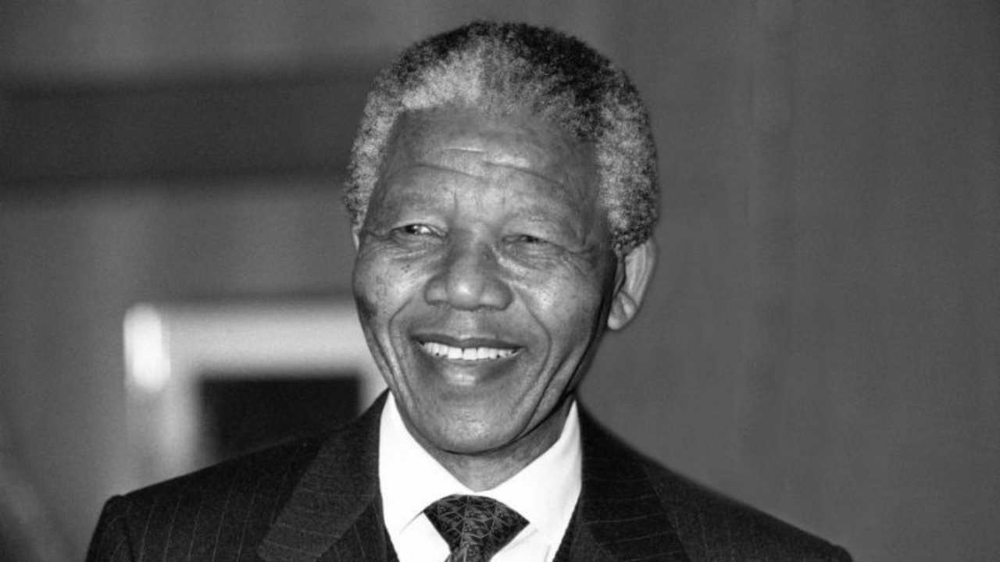

Nelson Mandela

Here are Mandels's most famous quotes
- “It always seems impossible until it’s done.”
- “I am fundamentally an optimist. Whether that comes from nature or nurture, I cannot say. Part of being optimistic is keeping one’s head pointed toward the sun, one’s feet moving forward. There were many dark moments when my faith in humanity was sorely tested, but I would not and could not give myself up to despair. That way lays defeat and death.”
- “For to be free is not merely to cast off one’s chains, but to live in a way that respects and enhances the freedom of others.”
- “No one is born hating another person because of the color of his skin, or his background, or his religion. People must learn to hate, and if they can learn to hate, they can be taught to love, for love comes more naturally to the human heart than its opposite.”
- “After climbing a great hill, one only finds that there are many more hills to climb.”
- “The greatest glory in living lies not in never falling, but in rising every time we fall.”
- “There is nothing like returning to a place that remains unchanged to find the ways in which you yourself have altered.”
- “If you want to make peace with your enemy, you have to work with your enemy. Then he becomes your partner.”
- “I learned that courage was not the absence of fear, but the triumph over it. The brave man is not he who does not feel afraid, but he who conquers that fear.”
- “Education is the most powerful weapon which you can use to change the world.”
What a great soul it was. We will miss him deeply. May God bless the memory of Nelson Mandela. May God bless the people of South Africa.
-- Former U.S President Barack Obama